수질환경산업기사 (2002-05-26 기출문제)
1과목: 수질오염개론
1. 농업용수 수질의 척도인 SAR을 구할 때 포함되지 않는 항목은?
- Ca
- Mg
- Na
- Mn
(정답률: 알수없음)

2. 수중에 CO2농도나 암모니아성 질소가 증가하며 Fungi가 사라지는 하천의 변화과정 지대는? (단, Whipple의 4지대 기준)
- 분해지대
- 활발한 분해지대
- 회복지대
- 정수지대
(정답률: 알수없음)
3. Mg(OH)2의 용해도 적이 1.1×10-11이면 Mg(OH)2의 용해도(g/L)는 얼마인가 ? (단, Mg(OH)2의 분자량은 58.3 이다.)
- 8.16 × 10-3
- 6.36 × 10-4
- 2.14 × 10-11
- 1.49 × 10-11
(정답률: 알수없음)
4. Bacteria 6g의 이론적인 COD는? (단, Bacteria의 분자식은(C5H7O2N), 질소는 암모니아로 분해됨을 기준으로 함)
- 7.0 g
- 7.5 g
- 8.0 g
- 8.5 g
(정답률: 알수없음)
5. 호수의 성층현상에 관한 설명으로 알맞지 않은 것은?
- 겨울에는 호수 바닥의 물이 최대 밀도를 나타내게 된다.
- 봄이 되면 수직운동이 일어나 수질이 개선된다.
- 여름에는 수직운동이 호수 상층에만 국한된다.
- 수심에 따른 온도변화로 인해 발생되는 물의 밀도차에 의해 일어난다.
(정답률: 알수없음)
6. 여름철 부영양화된 호수나 저수지에서 다음과 같은 조건을 나타내는 수층은?
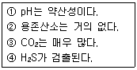
- 성층
- 수온약층
- 심수층
- 혼합층
(정답률: 알수없음)
7. 다음 콜로이드에 관한 설명중 잘못된 것은?
- 친수성 콜로이드의 경우는 단백질입자와 같이 입자 표면에 -OH - COOH -NH2와 같은 기를 가지고 있다
- 일반적으로 친수성콜로이드의 경우 이중층물질설이 적용되고 있다.
- Zeta 전위가 클수록 척력이 커져 응집(침전)이 잘 일어나지 않는다.
- zeta 전위는 콜로이드 입자의 전하와 전하의 효력이 미치는 분산매의 거리를 측정한다.
(정답률: 알수없음)
8. 다음의 지구상 수자원중에서 가장 많은 량을 차지하고 있는 것은?
- 대기(수증기)
- 하천수
- 토양수분 및 결합수
- 담수호
(정답률: 알수없음)
9. 다음은 알칼리도 적정 결과를 나타낸 것이다. 괄호에 알맞은 것은?(단, P는 페놀프탈레인 알칼리도, T는 총알칼리도 )
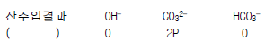
- P = T
- P = 1/2T
- P ＞ 1/2T
- P ＜ 1/2T
(정답률: 알수없음)
10. 수중의 유기물질 농도를 나타낼 때 가장 큰 값을 나타내는 것은?
- TOD
- TOC
- BOD
- COD
(정답률: 알수없음)
11. 다음은 해수오염도 지표중 해수의 탁도를 나타내는 식이다. K값의 내용으로 가장 적절한 것은?
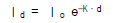
(단, d:심도, I : 태양방사에너지 )- 탈산소계수
- 태양방사 에너지계수
- 깊이별 투과계수
- 소멸계수
(정답률: 알수없음)
12. 용존산소의 포화농도가 9㎎/ℓ 인 하천에서 용존산소 농도가 6㎎/ℓ 이라면(BOD5가 5㎎/ℓ , K1 = 0.1day-1, K2 = 0.4day-1) 5일후의 하류에서의 DO부족량(mg/L)은? (단,
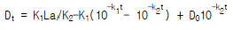
)- 약 0.8
- 약 1.8
- 약 2.8
- 약 3.8
(정답률: 0%)
13. 다음에 설명하고 있는 해류는 무엇인가?
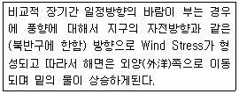
- Tidal current
- Deep ocean current
- Upwelling
- Tsunami
(정답률: 알수없음)
14. 해수의 주요성분을 살펴보면 가장 많이 함유된 Cl-, Na+이다. 그 다음 3번째로 많이 포함된 성분은?
- SO4-
- HCO3-
- Ca2+
- K+
(정답률: 알수없음)
15. 빗물의 특성에 대한 내용과 가장 거리가 먼 것은?
- 빗물은 낙하하면서 대기중의 CO2를 포화상태로 녹여 순수한 빗물의 pH를 약 5.6으로 만든다.
- 빗물은 용해성분이 많아 경수이다.
- SO2나 NO2 같은 기체가 빗물에 녹아 H2SO4 와 HNO3가 되어 산성비를 만든다.
- 수자원으로서 부정기적인 강우패턴과 집수· 저장방법 문제로 가치가 비교적 크지 않은 편이다.
(정답률: 알수없음)
16. 다음 중 헨리의 법칙(Henry's Law)에 가장 잘 적용되는 기체는?
- O2
- SO2
- NH3
- HCl
(정답률: 90%)
17. 20℃에서 k1이 0.16/day이라 하면 실제 온도가 10℃일 때 탈산소계수는? (단, 온도보정계수 θ 는 1.047이다)
- 0.⑤/day
- 0.10/day
- 0.15/day
- 0.20/day
(정답률: 알수없음)
18. '동점성계수'의 단위로 적절한 것은?
- cm2/sec
- g/cm· sec
- g· cm/sec2
- cm/sec2
(정답률: 알수없음)
19. 활성슬러지시스템으로 하수내 유기물을 처리할 때 어느 성장단계에서 운전하는 것이 최종침전지에서 쉽게 침전되며 가장 높은 처리효율을 얻을 수 있는가?
- 대수성장단계
- 감소성장단계
- 내생성장단계
- 유도기
(정답률: 알수없음)
20. 다음 중 분뇨의 특성에 관한 설명 중 틀린 것은?
- 분(糞)의 경우 질소화합물을 전체 VS의 12∼20% 정도 함유하고 있다.
- 뇨(尿)의 경우 질소화합물을 전체 VS의 40∼50% 정도 함유하고 있다.
- 질소화합물은 주로 (NH4)2CO3, NH4HCO3 형태로 존재한다.
- 질소화합물은 알칼리도를 높게 유지시켜 주므로 pH의 강하를 막아주는 완충작용을 한다.
(정답률: 알수없음)
2과목: 수질오염방지기술
21. 폐수에 함유된 저농도 PCB 처리방법과 가장 거리가 먼것은?
- 응집침전법
- 생물학적 처리
- 증발연소법
- 방사선 조사
(정답률: 알수없음)
22. 계획오수량에 관한 설명으로 알맞지 않은 것은?
- 지하수량:계획1인1일평균오수량의 5-10%로 한다.
- 합류식에서 우천시 계획오수량은 원칙적으로 계획시간최대오수량의 3배이상으로 한다.
- 계획1일 평균오수량:계획1일 최대오수량의 70-80%를 표준으로 한다.
- 계획시간최대오수량:계획1일 최대오수량의 1시간당 수량의 1.3-1.8배를 표준으로 한다.
(정답률: 알수없음)
23. 어느 특정한 산화지에 대해 1일 BOD부하를 40㎏/day-m2으로 설계하였다. 평균 유량이 3m3/min 이고 BOD농도가 300㎎/ℓ 일 때 필요한 면적(m2)은?
- 30.5
- 32.4
- 35.0
- 40.5
(정답률: 알수없음)
24. 응결(Flocculation)과 관계가 큰 것은 어느 것인가?
- 완속혼합
- 급속혼합
- 연수화
- 안정화
(정답률: 알수없음)
25. 어떤 폐수를 처리하기 위하여 시료 200mL를 취하여 Jar-test하여 응집제와 응집보조제의 최적 첨가농도를 구한 결과 Al2(SO4)3 :300mg/L, Ca(OH)2 :1,000mg/L 였다. 폐수량 500m3/일을 처리하는데 하루에 필요한 Al2(SO4)3의 양은?
- 750 Kg/일
- 300 Kg/일
- 150 Kg/일
- 30 Kg/일
(정답률: 알수없음)
26. 5단계 Bardenpho공정 중 혐기조의 역할에 관한 설명으로 가장 알맞는 것은?
- 유기물제거 및 인의 방출
- 유기물제거 및 인의 과잉 섭취
- 유기물제거 및 질산화
- 유기물제거 및 탈질
(정답률: 알수없음)
27. 일차정화조의 평균유입 TSS 농도가 250mg/L 이다. VSS 제거 효율이 60% 라면 유출평균 TSS 농도는? (단, FSS제거효율은 :0%, VSS=0.7TSS)
- 145mg/L
- 175mg/L
- 185mg/L
- 195mg/L
(정답률: 알수없음)
28. 다음 중 F/M 비의 단위로서 올바른 것은?
- ㎏MLSS/㎏BOD5ㆍday
- ㎏BOD5/㎏MLSSㆍday
- ㎏BOD5/㎏MLSS
- ㎏MLSS/㎏BOD5
(정답률: 알수없음)
29. 생물학적 인(P) 제거공법인 A/O공법에 관한 설명으로 알맞지 않은 것은?
- 무산소조,호기성조로 구성되어 있다.
- 호기성조에서 인의 과잉흡수가 일어난다.
- 폐슬러지의 인함량은 4-6% 정도이다.
- 잉여슬러지를 폐기함으로서 인을 제거하게 된다.
(정답률: 10%)
30. SS가 40,000ppm인 분뇨를 전처리에서 15% 그리고 1차처리에서 70%의 SS를 제거하였을 때 1차처리 후 유출되는 분뇨의 SS 농도는?
- 10,200ppm
- 11,200ppm
- 14,000ppm
- 16,800ppm
(정답률: 알수없음)
31. 속도구배(Velocity Gradient)를 정확하게 나타낸 식은 어느 것인가 ? (단, μ :점성계수, W:단위용적당 동력, V:응결지 부피, P:동력)
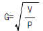
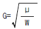
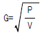
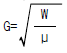
(정답률: 알수없음)
32. 다음 중 최종침전지에서 발생하는 슬러지 부상(sludgerising)의 원인을 가장 알맞게 설명한 것은?
- 침전조의 슬러지 압밀작용에 의한다.
- 침전조의 탈질화 작용(denitrification)에 의한다.
- 침전조의 질산화 작용(nitrification)에 의한다.
- 사상균류(flamentus bacteria)의 출현에 의한다.
(정답률: 알수없음)
33. [과산화수소는 ( )을(를) 촉매로 pH3.0-5.0에서 폐수중 난분해성 유기물질을 산화 시키는데 이용된다. 이 반응을 펜텐산화반응이라 한다.] ( )안에 알맞는 내용은?
- 2가 망간
- 2가 철
- 중크롬산
- 과망간산칼륨
(정답률: 40%)
34. 살수여상에 대한 설명 중 틀린 것은?
- 살수여상에 의한 폐수처리의 원리는 여재표면에 번식 하는 미생물이 폐수와 접촉하여 유기물을 분해하는 것이다.
- 유기물 부하가 적은 경우에는 혐기성 상태가 발생한다.
- 동작이 간단하고 유지관리가 용이하다.
- 살수여상의 여재로는 화강암, 자갈, 플라스틱 등을 사용한다.
(정답률: 알수없음)
35. 상수처리중 전염소처리에 관한 설명으로 알맞지 않은 것은?
- 소독을 위한 경우는 반응시간을 충분히 확보하기 위해 염소 혼화지를 별도로 설치하여야 한다.
- 염소제를 침전지 이전에 주입한다.
- 염소제 주입장소는 취수시설,도수관로등에서 교반이 잘 일어나는 장소로 한다.
- 통상 암모니아성질소 제거를 목적으로 하는 경우가 많다.
(정답률: 알수없음)
36. 어떤 미생물의 비증식 속도가 Monod식을 따른다고 한다. 최대 비증식 속도가 0.5h-1이고 비증식속도가 최대값의 1/2이 될 때의 제한기질 농도가 10mg/ℓ 이면 기질농도가 100mg/ℓ 일 때의 비증식속도(h-1)는? (단, Monod식은
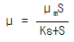
)- 0.75h-1
- 0.65h-1
- 0.55h-1
- 0.45h-1
(정답률: 알수없음)
37. 함수율 95 %의 슬러지를 함수율 80 %의 탈수케익으로 만들었을 때 탈수후 체적은 탈수전 체적에 비하여 얼마로 되겠는가?(단, 분리액으로 유출된 슬러지양은 무시 )
- 1/3
- 1/4
- 1/5
- 1/6
(정답률: 알수없음)
38. 부유물질의 농도가 200㎎/ℓ 인 하수 1000m3을 체류시간 2시간의 1차침전조에서 침전시켰을 때 부유물질의 제거효율이 60% 이였다면 이 때 발생된 슬러지의 양은? (단, 침전슬러지의 단위비중: 1.03, 함수율 94%)
- 약 1.94m3
- 약 2.36m3
- 약 3.25m3
- 약 4.⑤m3
(정답률: 30%)
39. 일반적으로 회전원판법에서 원판 직경의 몇 %가 물에 잠긴 상태에서 운영하는가?
- 약 20%
- 약 40%
- 약 60%
- 약 80%
(정답률: 알수없음)
40. 이온교환을 이용한 고도처리시 이온교환을 경제적으로 하기 위해서는 사용된 수지로부터 무기성 음이온과 유기물질을 제거할 수 있는 재생제와 회복제를 사용하여야 한다. 다음중 회복제로 적절치 못한 것은?
- NaOH
- 염화제이철
- 메탄올
- 벤토나이트
(정답률: 알수없음)
3과목: 수질오염공정시험방법
41. 단면이 축소되는 목부분을 조절함으로써 유량이 조절 되는 장점을 가진 유량 측정방법은?
- 벤튜리미터(Venturi Meter)
- 유량측정용노즐(Nozzle)
- 오리피스(Orifice)
- 피토우(Pitot)관
(정답률: 60%)
42. 다음 중 대장균의 설명으로 올바르지 않은 것은?
- 그람(gram) 음성
- 포아성 구균
- 유당을 분해하여 산과 가스를 발생
- 호기성 또는 통성 혐기성 균
(정답률: 알수없음)
43. 과망간산 칼륨법으로 COD를 측정할 때 적정에 소요된 0.01N -KMnO4 mℓ 는 산소 몇 ㎎ 에 해당하는가?
- 0.01㎎
- 0.08㎎
- 0.18㎎
- 0.20㎎
(정답률: 알수없음)
44. 직각삼각웨어의 유량은 대략 얼마인가 ? (단, 유량계수
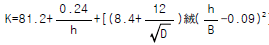
, D = 0.25m, B=0.8m, h=0.1m 이다.)- 약 2.8m3/min
- 약 1.5m3/min
- 약 0.6m3/min
- 약 0.3m3/min
(정답률: 알수없음)
45. 다음 중 백색원판(secchi 판)을 사용하여 투명도를 측정할 때 올바른 측정 방법이라고 볼 수 없는 것은?
- 일기,시각,개인차등에 의해서 약간의 차이가 생기므로 측정조건을 기록해 두는 것이 좋다.
- 파도가 격렬하게 일때는 투명도를 측정하지 않는다.
- 날씨가 맑고 직사광선이 비치는 밝은 곳을 택한다.
- 백색원판을 보이지 않는 깊이로 넣은 다음 천천히 끌어 올리면서 보이기 시작한 깊이를 반복해 측정한다.
(정답률: 알수없음)
46. 크롬 분석에 관한 다음 설명중 틀린 것은 ? (단, 흡광광도법 기준)
- 디페닐카르바지드는 3가 크롬과 반응한다.
- 적자색으로 발색되는 착화합물의 흡광도를 측정한다.
- 발색시 황산의 최적농도는 약 0.2N 이다.
- 시료중 철이 2.5mg이하로 공존할 경우에는 디페닐 카르바지드 용액을 넣기 전에 5% 피로인산나트륨·10수화물 용액 2mL를 넣어주면 영향이 없다.
(정답률: 알수없음)
47. 알칼리를 함유하는 폐수의 COD 측정에서 시료 100ml를 취해서 중화 적정을 해보니까 중성까지 요구된 산의 양은 6N-H2SO45ml 였다. 이시료로 부터 검수로 10ml를 취해서 100ml로 희석하여 COD실험을 한 결과 0.025N-KMnO4소요량은 4ml였을 때 이 폐수의 COD는? (단, 0.025N-KMnO4 용액의 역가는 1.⑤0 이었고 Blank Test 값은 0.32ml였다.)
- 약 80 mg/ℓ
- 약 70 mg/ℓ
- 약 60 mg/ℓ
- 약 50 mg/ℓ
(정답률: 알수없음)
48. 다음 중 중금속 정량을 위한 시료의 전처리시 유기물 분해를 위한 목적으로 사용하는 혼합산과 가장 거리가 먼 것은?
- 질산 - 황산
- 질산 - 염산
- 과염소산 - 황산
- 과염소산 - 질산
(정답률: 알수없음)
49. 2M-H2SO4 수용액 2ℓ 에 물을 가하여 0.5M-H2SO4 수용액을 만들려고 한다. 용액의 부피를 몇 ℓ 로 하면 되는가?
- 4ℓ
- 6ℓ
- 8ℓ
- 10ℓ
(정답률: 알수없음)
50. NaOH 용액 21.5㎖를 완전히 중화시키는데 비중이 1.1이고 20.2%인 HCl을 함유한 용액 25.5㎖를 소비하였다. NaOH의 노르말 농도는 ? (단, HCl의 분자량 36.47)
- 5.2N
- 7.2N
- 9.2N
- 10.2N
(정답률: 알수없음)
51. 수질오염공정시험법에 의해 분석할 시료채취량은 시험항목 및 시험횟수에 따라 차이가 있으나 보통 몇 ℓ 정도를 채취하는가?
- 0.5 -1ℓ
- 1.5 - 2ℓ
- 2 - 3ℓ
- 3 - 5ℓ
(정답률: 알수없음)
52. 노말헥산 추출물질 측정법에 있어서 n - 헥산층에 무수황산나트륨을 넣어 흔들어 섞는 이유는?
- 분해하기 위함
- 추출하기 위함
- 수분을 제거하기 위함
- 산화시키기 위함
(정답률: 알수없음)
53. 가스크로마토 그래프 분석에 사용되는 검출기중 니트로 화합물, 유기금속 화합물, 유기할로겐 화합물을 선택적으로 검출하는데 가장 알맞는 것은?
- 열전도도검출기
- 전자포획형검출기
- 염광광도형검출기
- 알칼리열이온화검출기
(정답률: 알수없음)
54. [원자흡광 광도법의 시험방법은 시료를 적당한 방법으로 해리시켜 중성원자로 증기화하여 생긴 ( )의 원자가 이원자 증기층을 투과하는 특유 파장의 빛을 흡수하는 현상을 이용하여 광전측광과 같은 개개의 특유 파장에 대한 흡광도를 측정한다.] ( )안에 알맞는 내용은?
- 여기상태
- 이온상태
- 바닥상태
- 분자상태
(정답률: 알수없음)
55. 분석용 저울이란 몇 mg까지 달 수 있어야 하는가?
- 10 mg
- 1 mg
- 0.1 mg
- 0.01 mg
(정답률: 알수없음)
56. 이온전극법의 특징으로 알맞지 않는 것은?
- 이온농도 측정범위는 일반적으로 10-1㏖/L- 10-4㏖/L이다.
- 이온전극의 종류나 구조에 따라 사용 가능한 pH 범위가 있다.
- 측정용액의 온도가 5℃ 상승하면 전위구배는 1가이온이 약 1㎷, 2가이온이 약 2㎷ 변화한다.
- 시료용액의 교반은 이온전극의 전극전위, 응답속도, 정량하한 값에 영향을 나타낸다.
(정답률: 알수없음)
57. N-핵산 추출물 측정시 사용되지 않는 실험 기구는?
- 뷰렛
- 80℃유지 전기열판
- 분액 깔때기
- 화학 천칭
(정답률: 알수없음)
58. BOD가 대략 400㎎/L으로 예측되는 폐수를 시료로 사용하여 BOD실험을 하는 경우 단지 5㎎/L의 DO가 배양기간중 미생물에 의하여 소모되어야 한다면 300㎎/L의 BOD병에 주입하여야 할 시료의 양은 ? (단, 식종하지 않은 시료의 BOD 측정 기준)
- 3.75mL
- 5.65mL
- 7.35mL
- 11.25mL
(정답률: 알수없음)
59. 다음은 수질측정 항목의 시료 채취 용기, 최대 보존 기간을 나열한 것이다. 거리가 먼 것은 ? (단, 항목 - 용기 - 기간)
- 색도 - 폴리에틸렌병, 유리병 - 48시간
- 6가크롬 - 폴리에틸렌병 - 1개월
- 유기인 - 유리병 - 7일
- 카드뮴 - 폴리에틸렌병, 유리병 - 6개월
(정답률: 알수없음)
60. 인산염인 시험법에서 인산 이온이 몰리브덴산 암모늄과 반응하여 생성된 몰리브덴산인 암모늄을 염화제일주석과 반응시켜 생성된 무슨 색의 흡광도를 측정하는가?
- 적색
- 자색
- 황색
- 청색
(정답률: 알수없음)
4과목: 수질환경관계법규
61. 1종사업장에 대하여 조업정지 10일에 갈음하여 과징금을 부과한 경우 납부하여야 할 과징금액은?
- 3천만원
- 5천만원
- 6천만원
- 8천만원
(정답률: 알수없음)
62. 기본부과금의 지역별 부과계수중 '청정 및 가지역'의 부과계수는?
- 1
- 1.5
- 2
- 2.5
(정답률: 알수없음)
63. 수질환경기준이 정해져 있는 법령은?
- 수질환경보전법시행령
- 수질환경보전법시행규칙
- 수질환경보전법
- 환경정책기본법시행령
(정답률: 알수없음)
64. 상수원수 2급과 이용목적별 적용대상이 동일한 것은?
- 수산용수 2급
- 공업용수 1급
- 수영용수
- 자연환경보전
(정답률: 알수없음)
65. 다음 중 오염도검사를 의뢰하지 않고, 현장에서 배출허용기준 초과여부를 직접 판정할 수 있는 오염물질은?
- 용존산소
- 탁도
- pH
- 색도
(정답률: 알수없음)
66. 일일기준초과배출량의 산정방법이다. 다음 중 ( )에 적합한 말은?
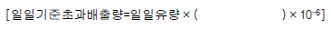
- 배출농도
- 배출허용기준농도
- 배출허용기준초과농도
- 배출기준농도
(정답률: 알수없음)
67. 다음은 하수종말처리시설 중 특별대책지역 및 잠실수중보권역을 제외한 기타지역에 대한 방류수기준으로 틀린것은?
- 생물화학적 산소요구량 : 20mg/L 이내
- 화학적 산소요구량 : 30mg/L 이내
- 부유물질량 : 20mg/L 이내
- 총질소 : 60mg/L 이내
(정답률: 알수없음)
68. 기술요원 또는 환경관리인이 관련분야에 따라 이수하여야 할 교육과정의 교육기간은?
- 3일이내
- 5일이내
- 7일이내
- 14일이내
(정답률: 알수없음)
69. 사업장별 환경관리인의 자격기준으로 알맞지 않은 것은?
- 연간 90일미만 조업하는 1, 2, 3종 사업장은 4, 5종사업장의 환경관리인을 선임할 수 있다.
- 방지시설 설치면제 사업장과 배출시설에서 배출되는 오염물질등을 공동방지시설에서 처리하게 하는 사업장은 4, 5종사업장의 관리인을 둘 수 있다.
- 공동방지시설에 있어서 폐수배출량이 3종사업장의 규모에 해당되는 경우는 2종사업장에 해당하는 환경관리인을 두어야 한다.
- 폐수종말처리장에 폐수를 유입시켜 처리하는 경우 1종 및 2종 사업장은 3종 사업장에 해당하는 환경관리인을 둘 수 있다.
(정답률: 알수없음)
70. 다음중 국립환경연구원에서 교육받아야 할 대상은?
- 방지시설업에 종사하는 기술요원
- 폐수처리업에 종사하는 기술요원
- 배출시설업에 종사하는 기술요원
- 환경관리인
(정답률: 20%)
71. 사업자가 배출시설 및 방지시설를 부적정하게 운영한 경우가 아닌 것은?
- 폐수의 염분이나 유기물의 농도가 높아 원래의 상태로는 생물화학적 처리가 어려운 경우 물을 섞어 희석 처리하는 경우
- 배출시설에서 배출되는 오염물질을 방지시설에 유입하지 아니하고 배출하는 경우
- 방지시설에 유입되는 오염물질을 최종방류구를 거치지 아니하고 배출하는 경우
- 방지시설에 유입되는 오염물질을 최종방류구를 거치지 아니하고 배출할 수 있는 시설을 설치하는 경우
(정답률: 알수없음)
72. 조업정지 명령에 대신하여 과징금을 징수할 수 있는 시설과 가장 거리가 먼 것은?
- 방위산업에 관한 특별조치법 규정에 의한 방위산업체 배출시설
- 수도법 규정에 의한 수도시설
- 도시가스사업법 규정에 의한 가스공급시설
- 석유사업법 규정에 의한 석유비축계획에 따라 설치된 석유비축시설
(정답률: 알수없음)
73. 다음중 수질환경보전법상 배출시설과 방지시설의 정상적인 운영· 관리를 위하여 필요한 환경관리인에 대한 임명권자는?
- 환경부장관
- 사업자
- 시· 도지사
- 시장· 군수
(정답률: 알수없음)
74. 하천 호소 항만 연안해역 기타 공공용에 사용되는 수역과 이에 접속하여 공공용에 사용되는 것으로 환경부령으로 정한 것이 아닌 것은?
- 상수관거
- 지하수로
- 운하
- 하수관거
(정답률: 알수없음)
75. 다음 중 초과부과금 부과대상이 아닌 것은?
- 구리 및 그 화합물
- 망간 및 그 화합물
- 총질소
- 디클로로메탄
(정답률: 알수없음)
76. 환경부장관은 사업자가 가동개시 신고를 한 후 조업중인 배출시설에서 배출허용기준을 초과한다고 인정할때에는 어떤 명령을 내릴 수 있는가?
- 환경관리인 개임명령
- 이전명령
- 개선명령
- 폐쇄명령
(정답률: 알수없음)
77. 1일 폐수배출량이 200m3인 사업장의 규모는?
- 2종
- 3종
- 4종
- 5종
(정답률: 알수없음)
78. 배출부과금중 초과배출부과금의 부과기준은?
- 배출허용기준
- 폐수종말처리시설의 방류수수질기준
- 하수종말처리시설의 방류수수질기준
- 배출허용기준과 방류수수질기준
(정답률: 알수없음)
79. 다음중 폐수배출시설 설치허가를 하여야 하는 경우가 아닌 것은?
- 상수원보호구역 경계로부터 상류로 유하거리 10킬로 미터이내에 설치하는 배출시설
- 특정수질유해물질이 발생되는 배출시설
- 상수원보호구역이 지정되지 않은 지역중 상수원 취수 시설이 있는 경우에는 취수시설로부터 상류로 유하거리 15킬로미터이내에 설치하는 배출시설
- 특별대책지역으로 지정되지 않은 지역중 상수원 취수 시설이 있는 지역의 경우 취수시설로 부터 상류로 유하거리 10킬로미터이내에 설치하는 배출시설
(정답률: 알수없음)
80. 배출시설로부터 배출되는 오염물질의 공동처리를 위하여 설치하는 공동방지시설의 설치 주체는?
- 사업자
- 지방자치단체장
- 시,도지사
- 환경부장관
(정답률: 알수없음)